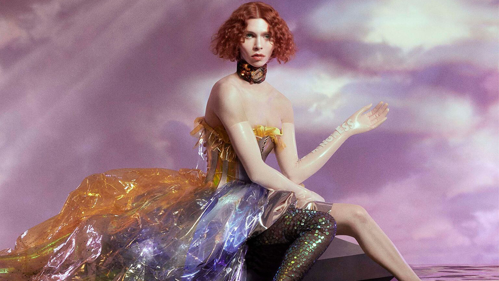

MUSIC
25 September 2020
Pillow Queens – ‘In Waiting’ review: debut that takes you right to the heart of modern Ireland
The debut album from Dublin’s Pillow Queens couldn’t be arriving at a better time. With society increasingly fractured – both by the rhetoric of division...
Rhian Daly -

MUSIC
15 June 2018
Oil of Every Pearl’s Un-Insides
The experimental music of SOPHIE relaxes into new forms on her debut album. It is sprawling and beautiful, while still keeping the disorienting, latex-pop feel of her fascinating production technique.
Sasha Geffen - MUSIC
MUSIC
As the Love Continues
The Scottish band is on familiar ground, patiently building mountainous songs suffused in nameless sadness, but they sound energized by the darkness—and refreshingly resistant to self-seriousness...
Marty Sartini Garner -